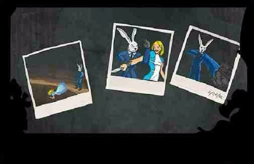
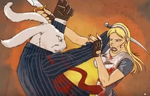

STATUS
UNKNOWN
Intelligence reports conflict regarding Alice's allegiance. Surveillance footage suggests repeated encounters with the White Rabbit immediately before major disturbances throughout Wonderland.
"Alice... why did it have to come to this?"
Once an ally. Now one of Wonderland's greatest unknowns. Every recovered memory uncovers another lie. Every answer creates another question.


Intelligence reports conflict regarding Alice's allegiance. Surveillance footage suggests repeated encounters with the White Rabbit immediately before major disturbances throughout Wonderland.
Intelligence recovered from abandoned diary pages indicates Alice's recollection of Wonderland has become increasingly fragmented. Events repeat, disappear, and contradict earlier witness testimony.
Although no direct attacks have been confirmed, every confirmed encounter with Alice precedes a major distortion somewhere inside Wonderland's borders.

Audio recovered from an abandoned mailbox. Voices overlap across multiple timelines.
PLAY RECORDING
A fragmented conversation recovered from damaged records. Every replay reveals another missing sentence.
UNLOCK MEMORYAlice enters Wonderland. Reality remains stable.
Royal intelligence loses visual confirmation. Queen initiates emergency investigation.
Alice begins reporting contradictory events. Witnesses provide incompatible testimony.
Investigation remains active. Alice's true intentions remain unknown.